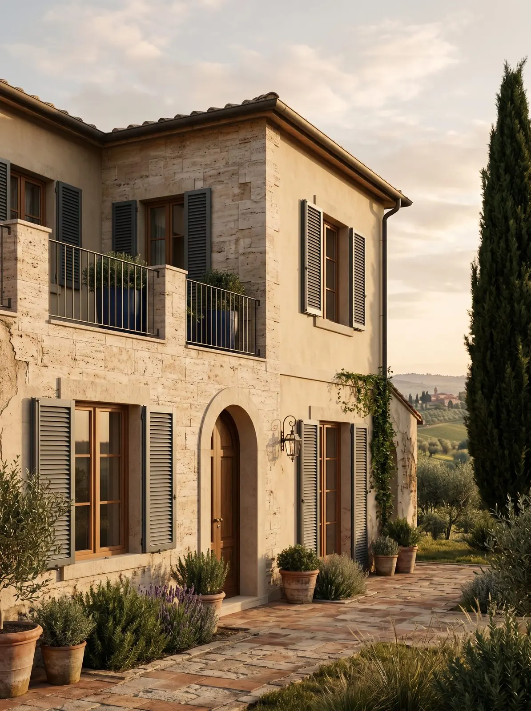

Serramentista ad Abbiategrasso.
Fra il Naviglio e il Ticino, a un quarto d’ora da noi.
Abbiategrasso è a circa 12 km dalla nostra officina, un quarto d'ora lungo il Naviglio Grande. Sopralluogo, posa e assistenza con i nostri dipendenti.
In quali zone lavoriamo?
In tutto il comune e nelle frazioni, e nei paesi intorno: Albairate, Cassinetta di Lugagnano, Robecco sul Naviglio, Ozzero.
Che infissi servono ad Abbiategrasso?
Nelle case di campagna e nelle cascine ristrutturate lavoriamo spesso con l'alluminio, ABS e legno, che porta il legno in casa senza la sua manutenzione, e con le persiane in alluminio. Nelle villette contano grate e zanzariere.
Tre interventi tipici.
Cascina ristrutturata
Alluminio, ABS e legno massello, anta bombata, persiane in alluminio effetto legno.
Villetta
Grate di sicurezza apribili e porta blindata in classe 3.
Appartamento in centro
Safe Window e cassonetti coibentati, con pratica ENEA.
Una garanzia come sempre. Io e mio marito abbiamo fatto eseguire ormai diversi lavori… trovandoci sempre benissimo.Claudia R. · Recensione Google
Domande da Abbiategrasso
Fate finestre in legno?
Venite anche nelle frazioni?
Veniamo a vedere la tua casa a Abbiategrasso.
Gratuito e senza impegno. Ti spieghiamo il preventivo voce per voce.